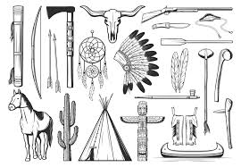

brasil eua

DIFERENÇAS
Número de grupos e diversidade cultural: Os Estados Unidos têm uma diversidade relativamente menor
de povos indígenas em comparação com o Brasil.
No Brasil, a colonização portuguesa e a subsequente exploração de recursos naturais tiveram um impacto duradouro nas comunidades indígenas.
Nos Estados Unidos, o processo de colonização pelos europeus e a expansão territorial resultaram em guerras,
remoções forçadas e políticas assimilacionistas que afetaram os povos indígenas.
Terra e território: As questões de terra e território são Estados Unidos, as tribos indígenas geralmente têm reservas designadas pelo governo federal, enquanto no Brasil,
os indígenas muitas vezes lutam pela demarcação e proteção de terras tradicionais que têm sido invadidas por fazendeiros, madeireiros e empresas.

\